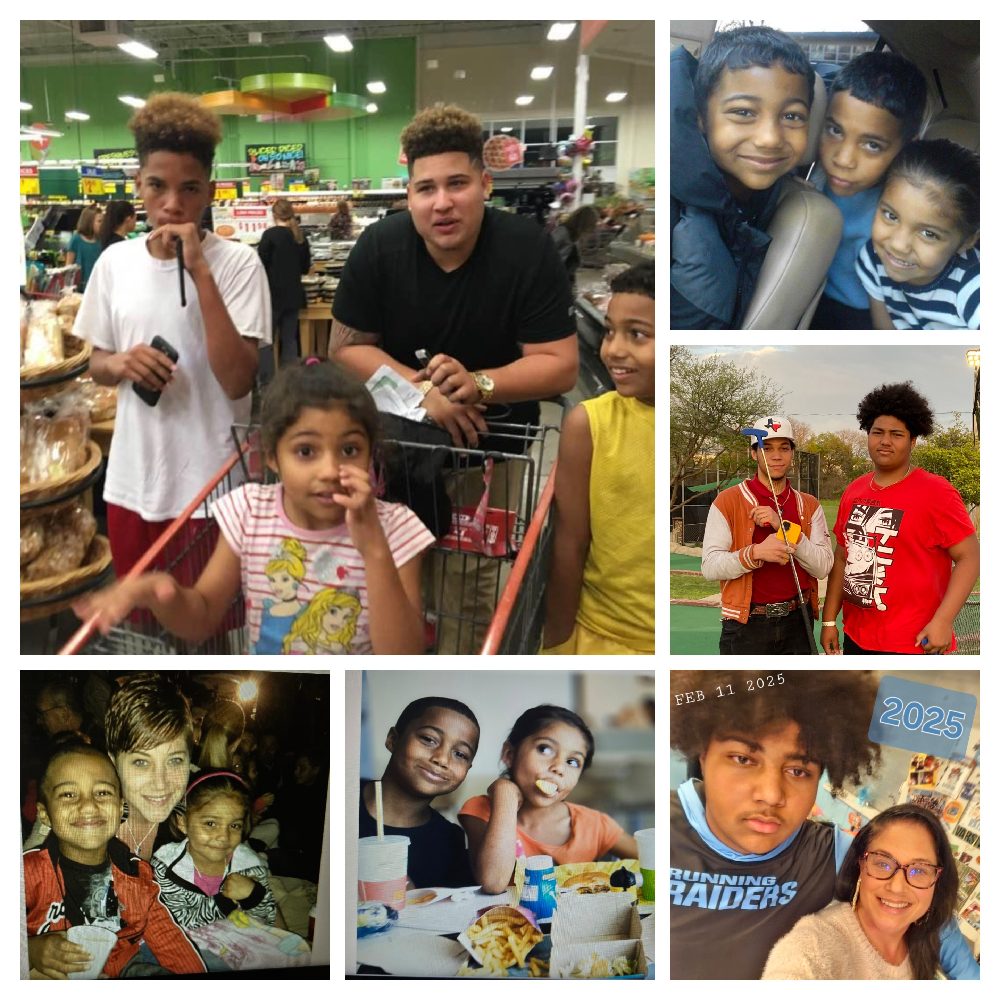

Meet Sommer Alexander
I am a 46-year-old mother of five amazing children, ranging in age from 17 to 29. For years, I tried to build a family while battling repeated cycles of abuse, heartbreak, and broken systems. After enduring physical, emotional, and mental abuse in my relationships, I turned to alcohol and eventually drugs, trying to shoulder the overwhelming weight of motherhood alone.
I sought help in women’s shelters, but the reality was harsh. I had five kids by four different fathers, and had to juggle the chaos of co-parenting with three men—one of whom was murdered when our son was just nine months old. In 2012, I finally left the father of my two youngest kids and entered another shelter. A year later, I found myself facing prison, separated from my children for nearly three years.
When I came home, I tried everything to stay on track for my kids, but now with a criminal record, I was shut out of stable housing and work opportunities. I got a small apartment, but couldn’t bring my children home. Isolated and unsupported, I slid back into survival mode. Then in May 2018, me and my fiancé were stabbed in a violent attack that almost killed us.
God spared our lives for a reason. I was evicted shortly after due to being unable to work while healing, and spent over four years unhoused. But through God’s grace, I pulled myself out, got sober, and started rebuilding. I worked hotel jobs and began doing justice reform advocacy on the side—learning about policy, systems, and how to make change.
In 2024, I stepped into my dream job as a Justice-Involved Reentry Peer Support Specialist with Texas Harm Reduction Alliance. I saw firsthand what our people—especially families—are missing. That’s when I decided to build what God had shown me in my vision: Go-Getters-4God.
This is not your ordinary nonprofit. Go-Getters-4God focuses on families struggling to stay together due to trauma, abuse, substance use, incarceration, legal issues, parenting gaps, and lack of support. While society punishes poverty and brokenness, we stand in the gap to build people up. Marginalized communities are not given tools to survive—so we give them.
I’m not a businesswoman with a wealthy foundation. I’m a woman rich in spirit, walking in obedience, and finally doing what God created me to do. I lived every system I’m trying to fix. And now I’m coming back for the families who are still in the storm, so they can learn how to make love a reality in their household.